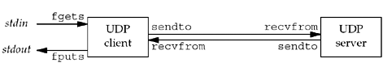

| [ Team LiB ] |
|
8.3 UDP Echo Server: main FunctionWe will now redo our simple echo client/server from Chapter 5 using UDP. Our UDP client and server programs follow the function call flow that we diagrammed in Figure 8.1. Figure 8.2 depicts the functions that are used. Figure 8.3 shows the server main function. Figure 8.2. Simple echo client/server using UDP. Figure 8.3 UDP echo server.udpcliserv/udpserv01.c
1 #include "unp.h"
2 int
3 main(int argc, char **argv)
4 {
5 int sockfd;
6 struct sockaddr_in servaddr, cliaddr;
7 sockfd = Socket(AF_INET, SOCK_DGRAM, 0);
8 bzero(&servaddr, sizeof(servaddr));
9 servaddr.sin_family = AF_INET;
10 servaddr.sin_addr.s_addr = htonl(INADDR_ANY);
11 servaddr.sin_port = htons(SERV_PORT);
12 Bind(sockfd, (SA *) &servaddr, sizeof(servaddr));
13 dg_echo(sockfd, (SA *) &cliaddr, sizeof(cliaddr));
14 }
Create UDP socket, bind server's well-known port7–12 We create a UDP socket by specifying the second argument to socket as SOCK_DGRAM (a datagram socket in the IPv4 protocol). As with the TCP server example, the IPv4 address for the bind is specified as INADDR_ANY and the server's well-known port is the constant SERV_PORT from the unp.h header. 13 The function dg_echo is called to perform server processing. |
| [ Team LiB ] |
|